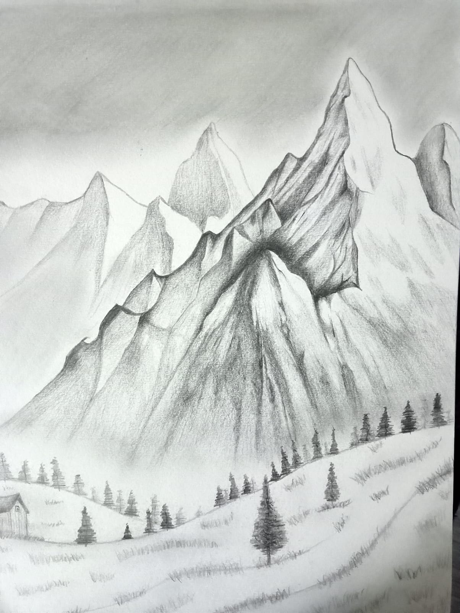
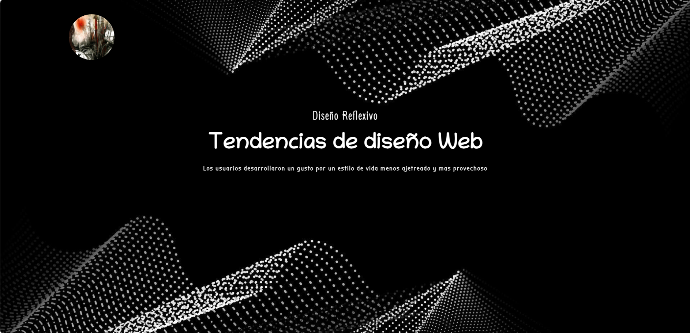
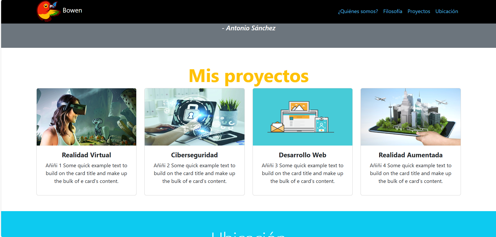
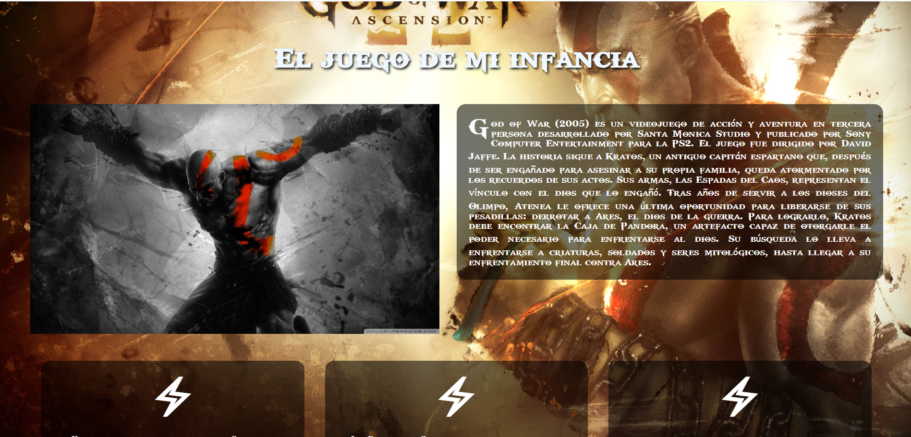

Portafolio Web
Portafolio Web
Soy una persona con interés en el desarrollo de software y en la creación de soluciones tecnológicas que resuelvan problemas reales
Desarrollo web · App Móviles · Base de Datos · Diseño/Front-End
Quién soy y qué estoy aprendiendo
Soy una persona con interés en el desarrollo de software y en la creación de soluciones tecnológicas que resuelvan problemas reales
Habilidades y Conocimientos

Conocimientos en programación utilizando C, Java y Kotlin, además de desarrollo de aplicaciones y resolución de problemas mediante estructuras y lógica de programación. También cuento con experiencia trabajando con bases de datos y SQL, así como con herramientas de desarrollo como IntelliJ IDEA y Android Studio.
Manejo de Figma para la creación de prototipos, maquetados y diseño de interfaces. Tengo conocimientos sobre HTML y CSS, diseño responsivo y adaptación de interfaces para diferentes tamaños de pantalla, buscando que las aplicaciones sean funcionales y fáciles de utilizar.
Cuento con conocimientos en análisis técnico de software, identificación de requerimientos y planificación de soluciones. Además, tengo formación y certificación en redes CCNA, lo que me permite comprender conceptos relacionados con redes, comunicación entre dispositivos y fundamentos de infraestructura.
Evidencias de los ejercicios realizados

Sitio sobre tendencias de diseño web: claymorfismo, glassmorfismo, tabla de horarios, formulario, mapa y multimedia.

Sitio responsivo con navbar, cards, ventanas modales, carousel y mapa de ubicación.

Página web sencilla que incluye: tipografía personalizada, iconos y diseño temático.
Reemplaza estas imágenes con capturas de tus proyectos
Video de muestra y música que me acompaña al programar
Trabajo colaborativo sobre un prototipo de aplicación orientado a la Gestión de Residuos Electrónicos
ID.- Skrillex - Kyoto (Virtual Riot Remix)
Un poco de mis gustos musicales